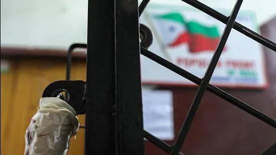

Following the Union government imposing a ban on the PFI and several of its associates for their alleged terror activities, Karnataka police chief Praveen Sood on Wednesday warned strict action on any protests or activities against the decision and in favour of the banned organisations.

Former Bengaluru police commissioner Praveen Sood.(HT photo)
Following the Union government imposing a ban on the Popular Front of India (PFI) and several of its associates for their alleged terror activities, Karnataka police chief Praveen Sood on Wednesday warned strict action on any protests or activities against the decision and in favour of the banned organisations.
Following the Union government imposing a ban on the Popular Front of India (PFI) and several of its associates for their alleged terror activities, Karnataka police chief Praveen Sood on Wednesday warned strict action on any protests or activities against the decision and in favour of the banned organisations.
The state's Director General and Inspector General of Police (DG and IGP) said the police and district authorities will be taking necessary action to implement the ban, as per the government orders.
"Following the Centre's ban, the action to be taken by the state government has been delegated through a notification, and an order has been issued. Now, the state government will be issuing an order shortly on action to be taken by the District Magistrates and Commissioner of Police on the ground," Sood said
Updated on Sep 28, 2022 09:27 AM IST
The ban is expected to cripple its funding, recruitment, and other activities as any person found associated with it can be booked under terror charges in any part of the country
 go to next page